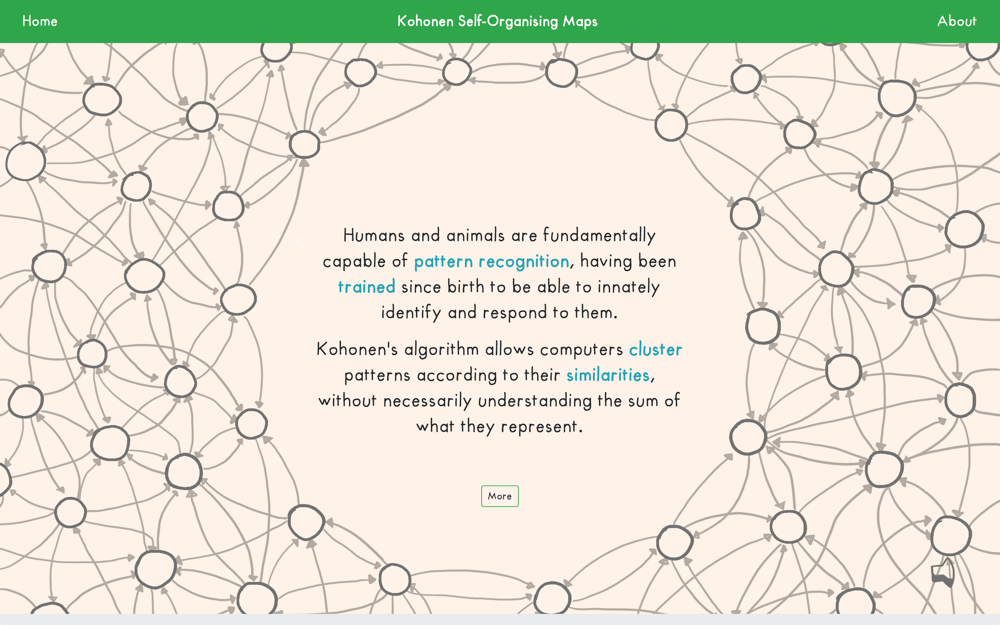
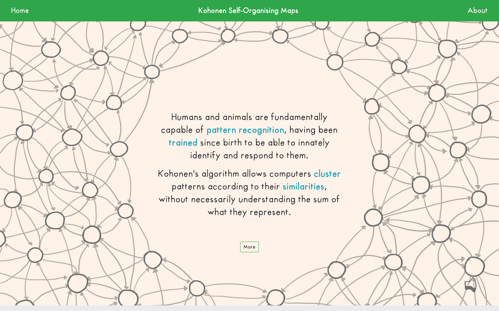
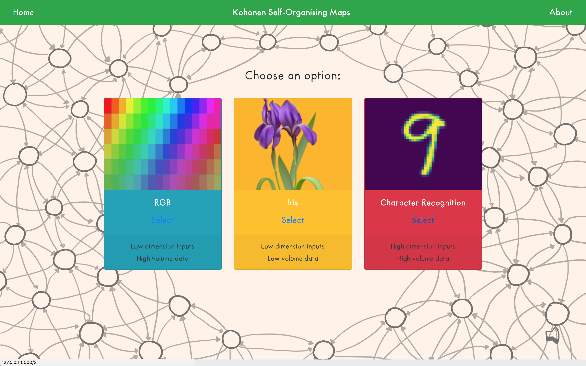
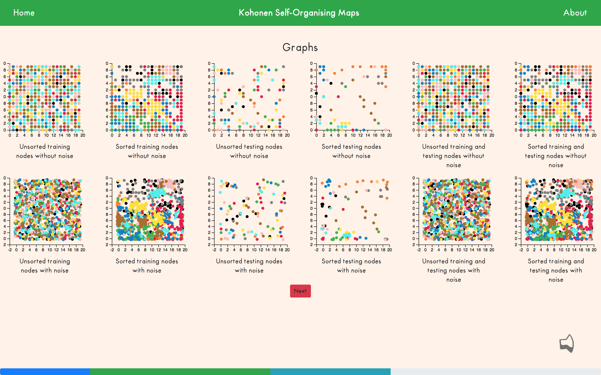
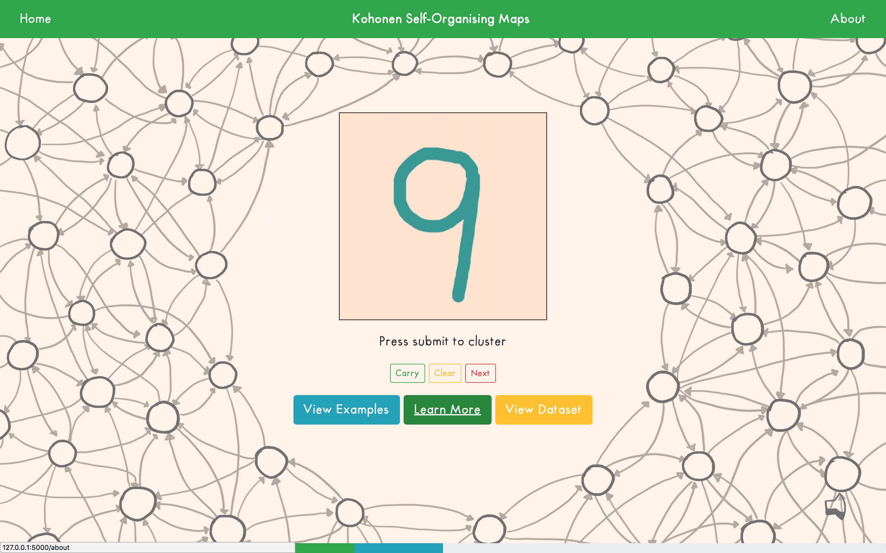
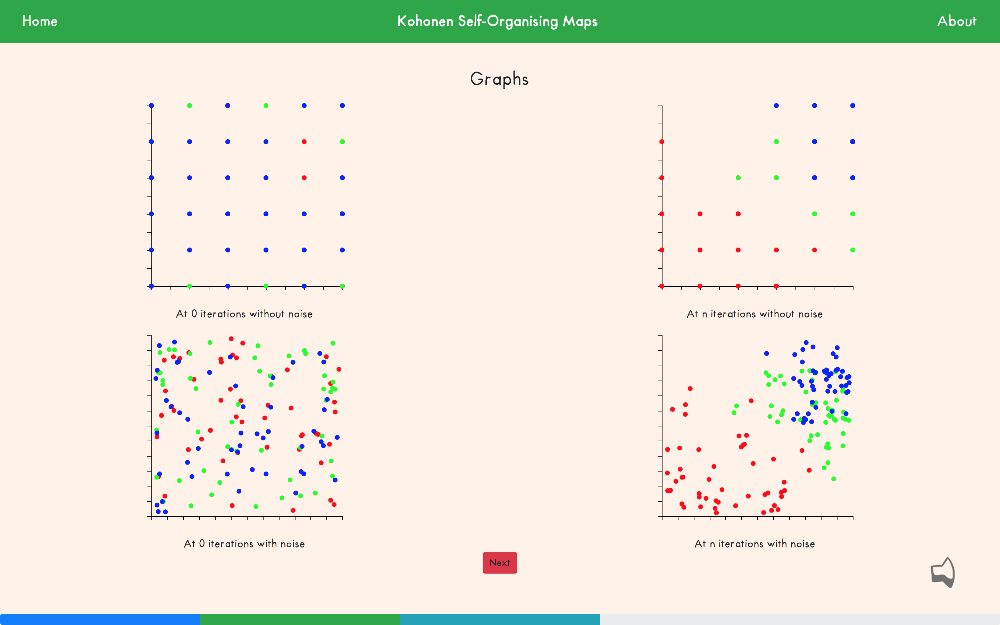
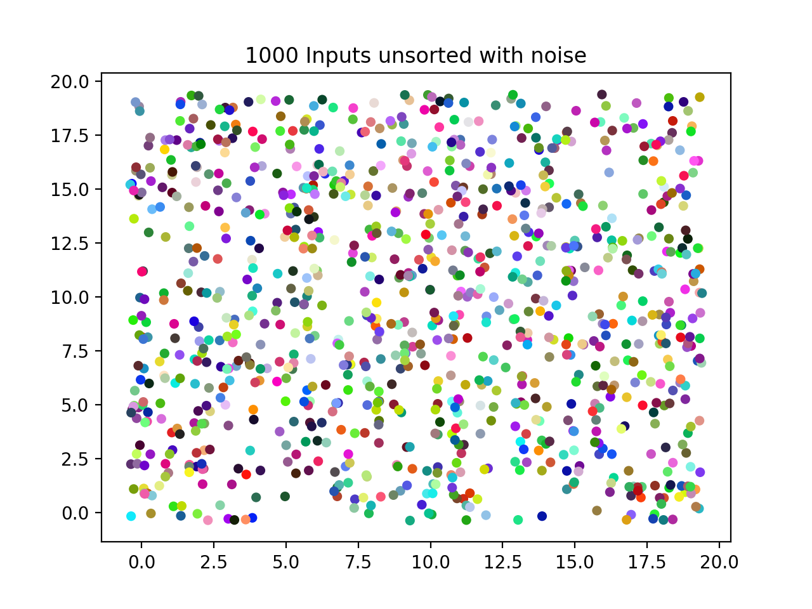
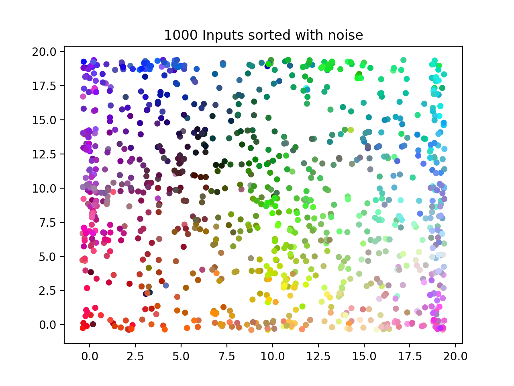

Kohonen Self-Organising Maps
2017-18
This project contains the implementation of a Kohonen Network as an application from scratch without any ML library, in order to demonstrate its usefulness and explain in depth the concepts of Machine Learning, by means of a converging Self-Organising Map. It provides an in depth study of Kohonen’s algorithm, and present insights of its properties, by designing and implementing three functional model on different datasets.
Kohonen’s Self-Organising Maps is an algorithm used to improve a machine’s performance in pattern recognition problems. The algorithm is especially capable of clustering and visualising complex high-dimensional data and can potentially be applied to solve many complex real-world problems.
The aim of this thesis is to provide an in-depth study of Kohonen’s algorithm, and present insights of its properties, by implementing a complete and functional model.
As part of this project, an extensive literature review on Kohonen networks was conducted first; and a brief background on its relevance to society, the technical structure,and the variables and formulas are presented. The scope, aims and objectives of the project are then defined in detail, highlighting the key differences that make Kohonen networks unique compared to other available models.
Subsequently, the project follows a design methodology, employing identified technologies to build a model, before presenting a comprehensive description of how each component of the final implementation was realised and tested.
The results of the project are then presented to provide answers to the formulated problem, before evaluating the project, and discussing its strengths, weaknesses, and the general learning points.
- Optimisation of algorithms when working with large quantities of data to improve processing speeds.
- Data Visualisation on the front-end using D3.Js to create topological maps of Neural Network's output data
- Sorting data according to labels.
- Connecting front and back ends using Python's Flask web-framework.
- Thesis: 191 pages, 18000 words
- Front-End: Bootstrap, JavaScript, CSS, HTML
- Back-End: Python, NumPy, Pandas, Matplotlib, ArgsParse
- Linking: Flask
 

 
 
 